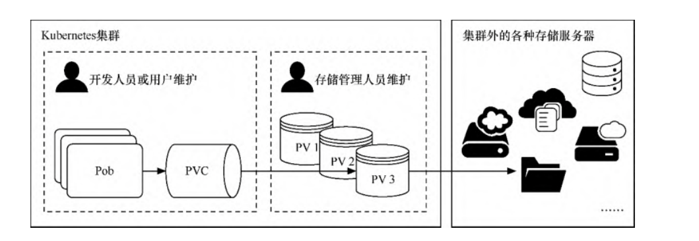

Contents
持久存储卷¶
在介绍网络存储卷的时候已经提到，Kubernetes支持为数众多的云提供商和网络存储方案，如NFS/iSCSI/GlusterFS/RDB/azureDisk/flocker等。但因为网络存储卷通常是集成各种第三方的存储系统，所以在配置上各有差别。
由于方案众多，配置有异，因此在存储参数的配置方面，可能只有对应的存储管理人员才能了解，而且这些都不应该是开发人员或集 群管理员需要关注的。
Kubernetes提供了3种基于存储的抽象对象——PersistentVolume（PV）、StorageClass和PersistentVolumeClaim（PVC），以支持基础设施和应用之间的分离。
这样开发人员、存储管理人员能各司其职，由存储管理人员设置PV或StorageClass，并在里面配置存储系统和参数，然后开发人员只 需要创建PVC来申请指定空间的资源以存储与共享数据即可，无须再关注存储的具体实现和操作，如图7-13所示。当删除PVC时，它写入具体存储资源中的数据可以根据回收策略自动清理。
PVC与PV的管理
1. PV与PVC¶
PV表示持久存储卷，定义了Kubernetes集群中可用的存储资源，其中包含存储资源实现的细节，如包含如何使用 NFS/iSCSI/GlusterFS/RDB/azureDisk/flocker 等资源的具体设置。
·
PVC表示持久存储卷的申请，是由用户发起的对存储资源的请求。申请中只包含请求资源的大小和读写访问模式，无须关注具体的资源 实现细节，Kubernetes会自动为其绑定符合条件的PV。
1.1 PV与PVC的基本操作¶
examplefornfspv.yml
apiVersion: v1
kind: PersistentVolume
metadata:
name: examplefornfspv
spec:
capacity:
storage: 1Gi
accessModes:
- ReadWriteMany
persistentVolumeReclaimPolicy: Recycle
storageClassName: examplenfs
nfs:
path: /nfstest
server: 192.168.1.60
该模板的主要含义如下。
kind表示要创建的资源对象，这里使用关键字PersistentVolume。
spec表示该资源对象的具体设置。
capacity：表示PV的容量，通过storage子属性可以指定占用的具体存储资源（如NFS）的大小，在本例中设定为1Gi
accessModes：定义 PV 对具体存储资源（如 NFS）的访问模式。一共有 3种访问模式，分别为ReadWriteOnce（该卷可以被单个节点以读写模式挂载），ReadOnlyMany（该卷可以被多个节点以只读模式挂载），ReadWriteMany（该卷可以被多个节点以读写模式挂载）。
在本例中使用ReadWriteMany。persistentVolumeReclaimPolicy：表示当删除PVC 时，PV资源的回收策略。一共有3种策略，分别为
Retain（保留）、Recycle（自动回收）、Delete（自动删除）。当前只有NFS和hostPath支持Recycle策略，AWSEBS、GCE PD、Azure Disk和Cinder卷支持Delete策略。在 本例中使用Recycle。storageClassName：表示PV资源的描述性分类名称，例如，可以使用“ssd”“slowdisk”等具备分类的描述性名称。后续在创建PVC时可以引用这个名称来绑定PV。nfs：表示该PV使用NFS服务器作为具体的存储资源，server和path属性为之前网络存储卷示例中配置的NFS服务 器及共享目录。
接下来，执行以下命令，创建PV。
$ kubectl apply -f examplefornfspv.yml
PV创建完成后，可以通过以下命令查询PV资源。
$ kubectl get pv
NAME CAPACITY ACCESS MODES RECLAIM POLICY STATUS CLAIM STORAGECLASS REASON AGE
examplefornfspv 1Gi RWX Recycle Available
查询结果如上所示。PV已成功创建，其STATUS属性为Available，这表示资源空闲，尚未被PVC申请使用。
接下来，使用以下命令，可以查询PV资源的详情。
$ kubectl describe pv {PV名称}
在本例中，命令为$ kubectl describe pvexamplefornfspv。执行结果如图7-15所示，在Source处可以看到具体的资源配置信息。
$ kubectl describe pv examplefornfspv
Name: examplefornfspv
Labels: <none>
Annotations: <none>
Finalizers: [kubernetes.io/pv-protection]
StorageClass: examplenfs
Status: Available
Claim:
Reclaim Policy: Recycle
Access Modes: RWX
VolumeMode: Filesystem
Capacity: 1Gi
Node Affinity: <none>
Message:
Source:
Type: NFS (an NFS mount that lasts the lifetime of a pod)
Server: 192.168.1.60
Path: /nfstest
ReadOnly: false
Events: <none>
PV定义完成后就可以创建PVC以申请使用存储卷资源。
接下来，创建examplefornfspvc.yml文件。
apiVersion: v1
kind: PersistentVolumeClaim
metadata:
name: examplefornfspvc
spec:
accessModes:
- ReadWriteMany
storageClassName: "examplenfs"
resources:
requests:
storage: 500Mi
该模板的主要含义如下。
kind表示要创建的资源对象，这里使用关键字PersistentVolumeClaim。
spec表示该资源对象的具体设置。accessModes：定义对PV的访问模式。Kubernetes会给PVC绑定满足此访问模式的PV。在本例中使用ReadWriteMany，与之前定义的PV保持一致。
storageClassName：表示要引用的PV资源的描述性分类名称。Kubernetes会根据这个名称将PVC绑定到符合条件的 PV。在本例中使用examplenfs，这与之前定义的PV保持一致。
resources：定义PVC的资源参数。requests属性会设置具体资源需求，Kubernetes会给PVC绑定满足资源大小的PV。 本例中设置为“storage: 500Mi”，这表示申请500MiB（1MiB=2 20 B，1MB=10 6 B）的资源大小。之前我们创建 的PV为1GiB（1GiB=2 30 B，1GB=10 9 B），足够容纳该资源请求。
接下来，执行以下命令，创建PVC。
$ kubectl apply -f examplefornfspvc.yml
PVC创建完成后，可以通过以下命令查询PVC资源。
$ kubectl get pvc
NAME STATUS VOLUME CAPACITY ACCESS MODES STORAGECLASS AGE
examplefornfspvc Bound examplefornfspv 1Gi RWX examplenfs 0s
查询结果如上面所示。PVC已成功创建，其STATUS属性为Bound，表示已成功绑定到符合PVC资源申请条件的PV上；
VOLUME属性显示了绑定的PV的名称，这正是我们之前创建的examplefornfspv。
此时如果再通过$ kubectl get pv命令查看已创建的PV，可以发现其STATUS属性由之前的Available变为Bound，CLAIM属性由
空值变为刚才创建的PVC。
$ kubectl get pv
NAME CAPACITY ACCESS MODES RECLAIM POLICY STATUS CLAIM STORAGECLASS REASON AGE
examplefornfspv 1Gi RWX Recycle Bound default/examplefornfspvc
使用以下命令，可以查询PVC资源的详情。
$ kubectl describe pvc examplefornfspvc
Name: examplefornfspvc
Namespace: default
StorageClass: examplenfs
Status: Bound
Volume: examplefornfspv
Labels: <none>
Annotations: pv.kubernetes.io/bind-completed: yes
pv.kubernetes.io/bound-by-controller: yes
Finalizers: [kubernetes.io/pvc-protection]
Capacity: 1Gi
Access Modes: RWX
VolumeMode: Filesystem
Used By: <none>
Events: <none>
PVC创建完成后，为了定义Pod并使用PVC引用的资源，首先，创建exampledeployforpvc.yml文件。
apiVersion: apps/v1
kind: Deployment
metadata:
name: exampledeployforpvc
spec:
replicas: 2
selector:
matchLabels:
example: exampleforpvc
template:
metadata:
labels:
example: exampleforpvc
spec:
containers:
- name: containerforpvc
image: busybox
imagePullPolicy: IfNotPresent
command: ['sh', '-c']
args: ['echo "The host is $(hostname)" >> /dir/dataforpvc; sleep 3600']
volumeMounts:
- name: pvcdata
mountPath: /dir
volumes:
- name: pvcdata
persistentVolumeClaim:
claimName: examplefornfspvc
本例中创建的存储卷名称为pvcdata，这个名称会被容器设置中的volumeMounts所引用。存储卷的类型是persistentVolumeClaim（即使用PVC），claimName属性表示引用的PVC名称，本例中为examplefornfspvc。
接下来，执行以下命令，创建Deployment控制器。
$ kubectl apply -f exampledeployforpvc.yml
创建后可以通过$ kubectl get deploy命令查看启动状态
$ kubectl get deployment
NAME READY UP-TO-DATE AVAILABLE AGE
exampledeployforpvc 2/2 2 2 29s
接下来，执行$ kubectl get pod -o wide命令，可以看到Deployment控制器一共创建了两个Pod，分别位于不同
的机器上。
在本例中，PVC所绑定的PV引用中NFS服务器的共享目录为/data/nfs/nfstest。在NFS服务器上执行cat /data/nfs/nfstest/data，可输出NFS共享目录下的文件内容。
$ cat /data/nfs/nfstest/dataforpvc
The host is exampledeployforpvc-697cbdb4d9-qjg8h
The host is exampledeployforpvc-697cbdb4d9-zvkk4
任意抽取一个Pod（在本例中为exampledeployforpvc-697cbdb4d9-qjg8h），通过以下命令进入Pod内部的命令界面。
$ kubectl exec -it pod/exampledeployforpvc-697cbdb4d9-qjg8h -- /bin/sh
/ # cat /dir/dataforpvc
The host is exampledeployforpvc-697cbdb4d9-qjg8h
The host is exampledeployforpvc-697cbdb4d9-zvkk4
/ # echo "hujianli20220417!" >> /dir/dataforpvc
/ # cat /dir/dataforpvc
The host is exampledeployforpvc-697cbdb4d9-qjg8h
The host is exampledeployforpvc-697cbdb4d9-zvkk4
hujianli20220417!
回到nfs服务器目录查看数据的一致性
$ cat /data/nfs/nfstest/dataforpvc
The host is exampledeployforpvc-697cbdb4d9-qjg8h
The host is exampledeployforpvc-697cbdb4d9-zvkk4
hujianli20220417!
1.2 PV的解绑与回收¶
在之前的示例中已经将exampledeployforpvc绑定到唯一的PV—exampledeployforpv上，如果此时再创建一个新的PVC，会发生什么情 况呢？
examplefornfspvc2.yml
apiVersion: v1
kind: PersistentVolumeClaim
metadata:
name: examplefornfspvc2
spec:
accessModes:
- ReadWriteMany
storageClassName: "examplenfs"
resources:
requests:
storage: 500Mi
接下来，执行以下命令，创建PVC。
$ kubectl apply -f examplefornfspvc2.yml
PVC创建完成后，可以通过以下命令查询PVC资源。
$ kubectl get pvc
NAME STATUS VOLUME CAPACITY ACCESS MODES STORAGECLASS AGE
examplefornfspvc Bound examplefornfspv 1Gi RWX examplenfs 5m43s
examplefornfspvc2 Pending examplenfs <invalid>
可以看到examplefornfspvc2的STATUS属性为Pending，这表示PVC一直处于挂起状态，没有找到合适的PV资源。
虽然examplefornfspv定义的空间为1GiB，而后面定义的两个PVC都各自只申请了500MiB的资源，但PV和PVC只能一对一绑定，不能一对多绑定，所以examplefornfspvc2无法申请到合适的PV资源。要使用examplefornfspvc2，要么再创建一个新的PV资源，要么就让之前的PVC和PV资源解除绑定。
此时我们可以执行以下命令，先删除之前创建的PVC资源。
$ kubectl delete pvc exampledeployforpvc
执行删除命令后，执行$ kubectl get pv命令，可以看到examplefornfspv的STATUS属性由Bound变回Available，CLAIM属性 再次变为空值。PV和PVC已解除绑定,examplefornfspvc2自动绑定到了pv上。
此时再执行$ kubectl get pv命令，可以看到examplefornfspv和examplefornfspvc2已成功绑定
$ kubectl get pvc
NAME STATUS VOLUME CAPACITY ACCESS MODES STORAGECLASS AGE
examplefornfspvc2 Bound examplefornfspv 1Gi RWX examplenfs 2m41s
$ kubectl get pv
NAME CAPACITY ACCESS MODES RECLAIM POLICY STATUS CLAIM STORAGECLASS REASON AGE
examplefornfspv 1Gi RWX Recycle Bound default/examplefornfspvc2 examplenfs 10m
因为之前PV定义的回收策略（persistentVolumeReclaimPolicy）为Recycle，这表示自动回收，所以解绑后会清理PVC在PV上写入的内
容。此时如果再执行$ cat /data/nfs/nfstest/dataforpvc，可以看到文件已不存在。
$ cat /data/nfs/nfstest/dataforpvc
cat: /data/nfs/nfstest/dataforpvc: No such file or directory
如果自动回收失败，则PV的STATUS属性将变为Failed，这表示暂时无法使用。
如果之前PV定义的回收策略是Retain，则删除PVC后资源不会自动回收。
此时/data/nfs/nfstest/dataforpvc文件依然存在，而PV的STATUS属性将变为Released，因此依然不能重新绑定其
他PVC，除非重新创建PV。